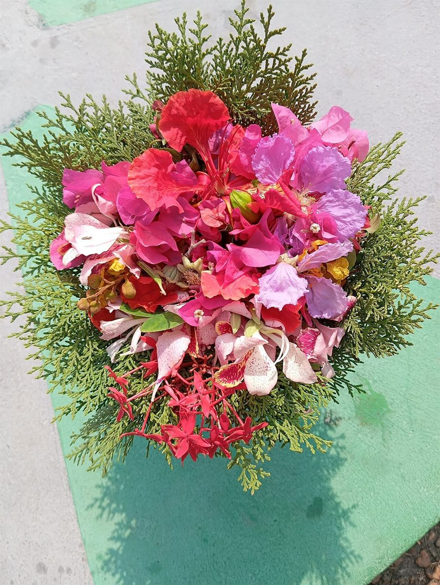
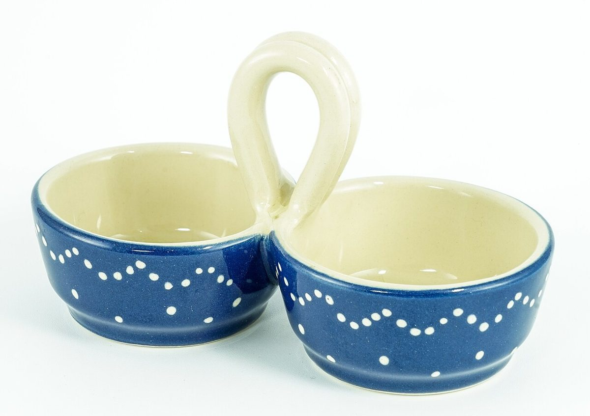
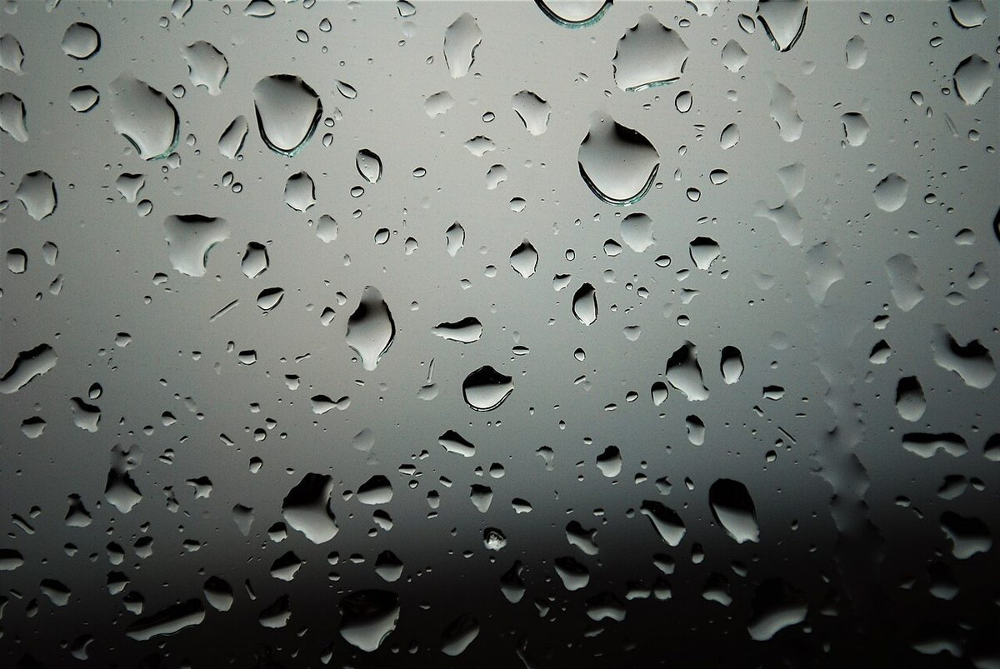

01
bouquet
ブーケ
花束。
国外・撮影地不明のイメージ
カフェ / 京都府長岡京市
京都府長岡京市のカフェ「cafe BAMBOU」のご案内ページです。営業時間やメニューなど、詳しいことは準備中。ご連絡はお電話か、Instagramから。


制作側の連想
店名の意味や由来は分かりません。制作側は、綴りの終わりが「OU」であることに目を留めました。フランス語では、この二文字をまとめて「ウ」と読みます。そこでこのサイトは、「ou」を含むフランス語を14語集めた辞典のような作りにしています。お店の理念・由来とは無関係の、制作側の連想です。
ouの十四語 その1
写真は長岡京市やお店のものではありません。国外・撮影地不明のフリー素材を、言葉のイメージで選びました。丸い枠は「o」、器の形の枠は「u」を表します。

01
ブーケ
花束。
国外・撮影地不明のイメージ

02
クルール
色。
国外・撮影地不明のイメージ

03
グット
しずく。
国外・撮影地不明のイメージ

04
トゥルビヨン
渦。
国外・撮影地不明のイメージ
ご案内
| 所在地 | 〒617-0823 京都府長岡京市長岡１丁目１−１０ |
|---|---|
| 電話 | 075-951-0812 |
| 営業時間 | 準備中 |
| 定休日 | 準備中 |
| ご予約 | 準備中 |
| 駐車場 | 準備中 |
| SNS | Instagram @cafe_bambou1982 |